library(fpp3)Exercise Week 4: Solutions
fpp3 5.10, Ex 1
Produce forecasts for the following series using whichever of
NAIVE(y),SNAIVE(y)orRW(y ~ drift())is more appropriate in each case:
- Australian Population (
global_economy)- Bricks (
aus_production)- NSW Lambs (
aus_livestock)- Household wealth (
hh_budget)- Australian takeaway food turnover (
aus_retail)
Australian population
global_economy |>
filter(Country == "Australia") |>
autoplot(Population)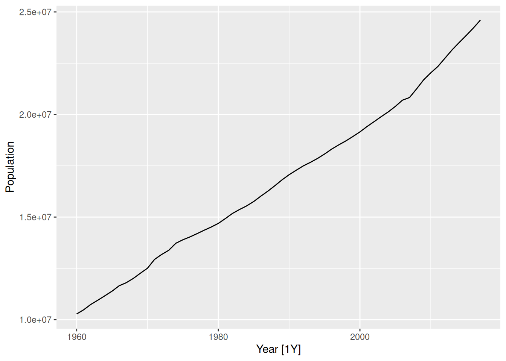
Data has trend and no seasonality. Random walk with drift model is appropriate.
global_economy |>
filter(Country == "Australia") |>
model(RW(Population ~ drift())) |>
forecast(h = "10 years") |>
autoplot(global_economy)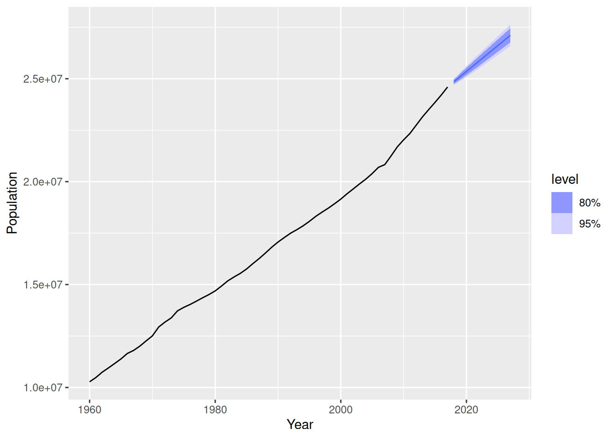
Australian clay brick production
aus_production |>
filter(!is.na(Bricks)) |>
autoplot(Bricks) +
labs(title = "Clay brick production")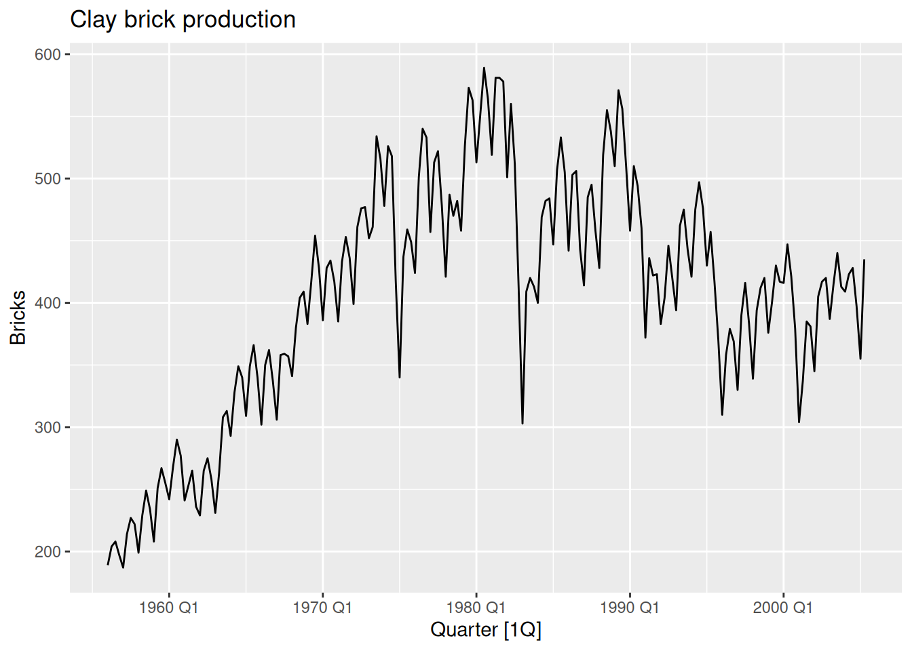
This data appears to have more seasonality than trend, so of the models available, seasonal naive is most appropriate.
aus_production |>
filter(!is.na(Bricks)) |>
model(SNAIVE(Bricks)) |>
forecast(h = "5 years") |>
autoplot(aus_production)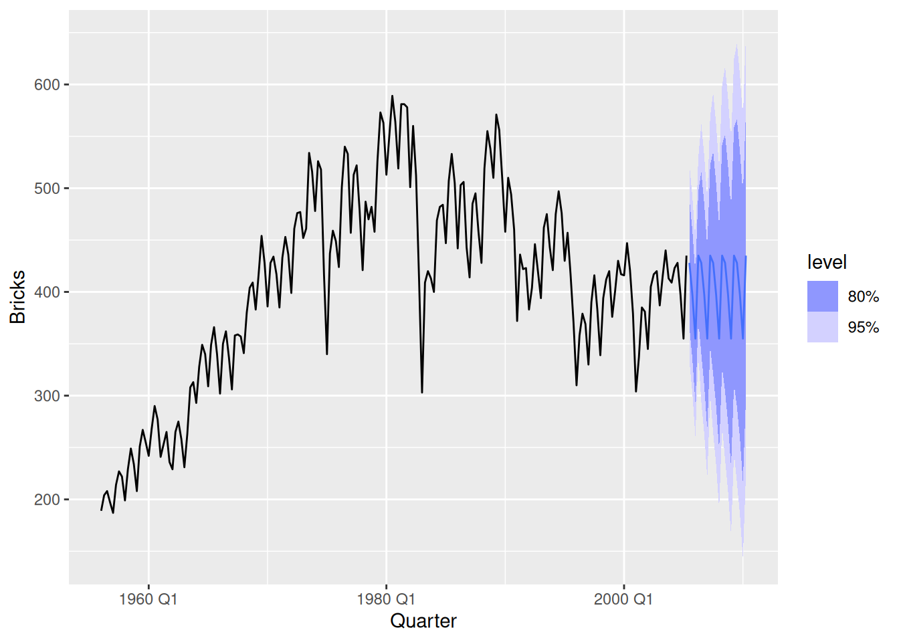
NSW Lambs
nsw_lambs <- aus_livestock |>
filter(State == "New South Wales", Animal == "Lambs")
nsw_lambs |>
autoplot(Count)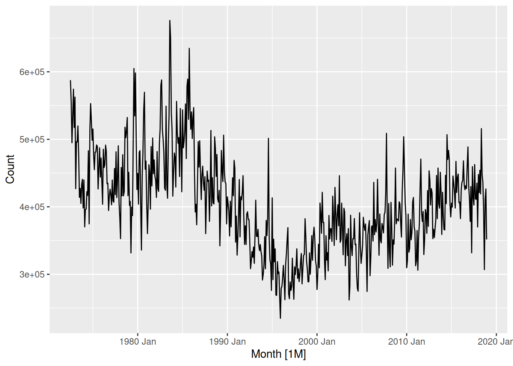
This data appears to have more seasonality than trend, so of the models available, seasonal naive is most appropriate.
nsw_lambs |>
model(SNAIVE(Count)) |>
forecast(h = "5 years") |>
autoplot(nsw_lambs)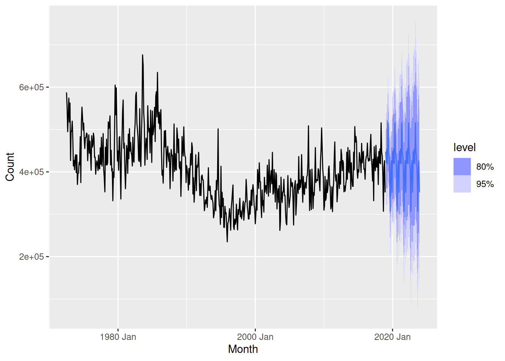
Household wealth
hh_budget |>
autoplot(Wealth)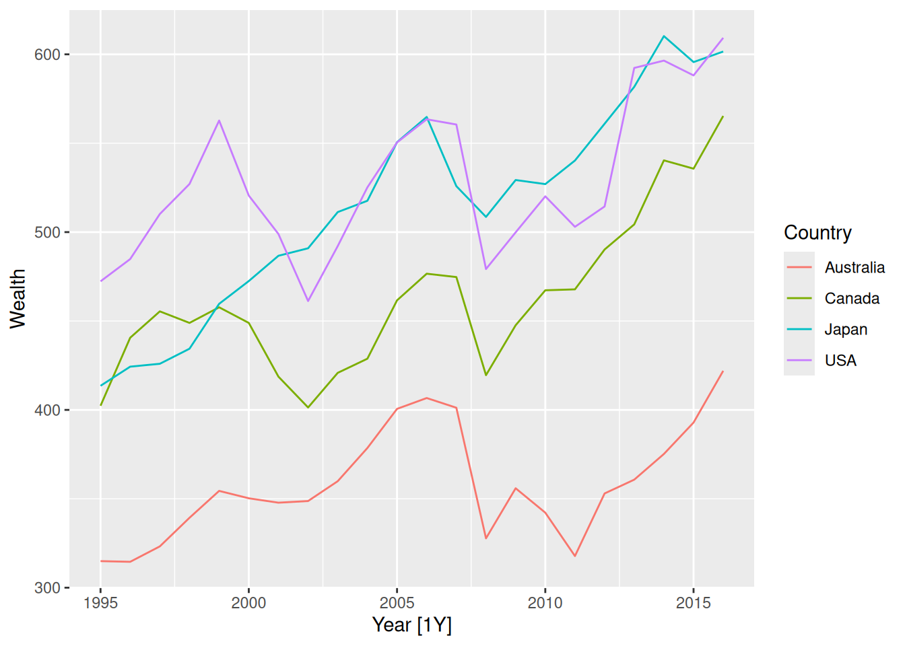
Annual data with trend upwards, so we can use a random walk with drift.
hh_budget |>
model(RW(Wealth ~ drift())) |>
forecast(h = "5 years") |>
autoplot(hh_budget)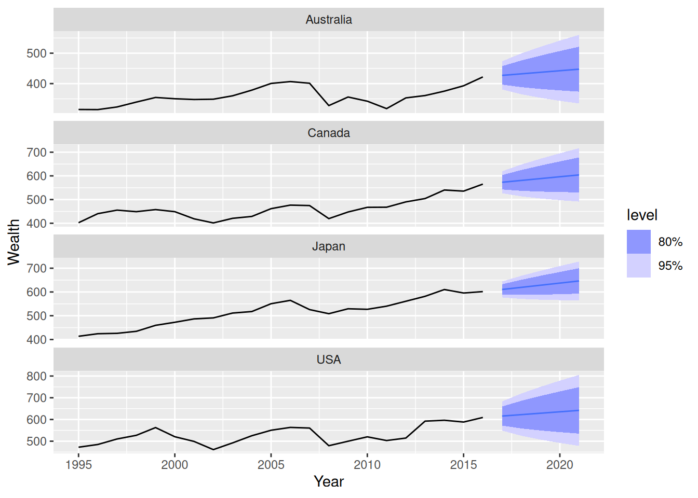
Australian takeaway food turnover
takeaway <- aus_retail |>
filter(Industry == "Takeaway food services") |>
summarise(Turnover = sum(Turnover))
takeaway |> autoplot(Turnover)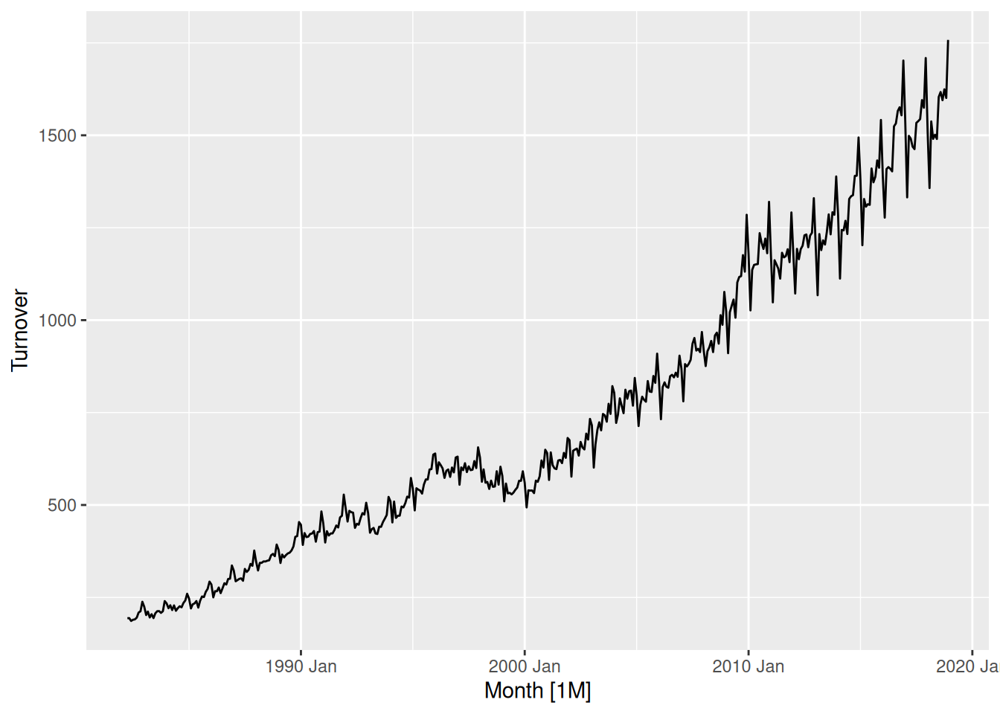
This data has strong seasonality and strong trend, so we will use a seasonal naive model with drift.
takeaway |>
model(SNAIVE(Turnover ~ drift())) |>
forecast(h = "5 years") |>
autoplot(takeaway)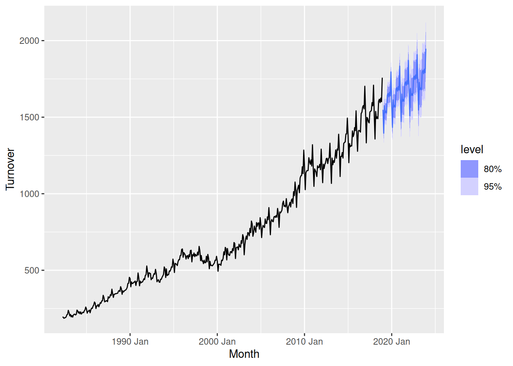
This is actually not one of the four benchmark methods discussed in the book, but is sometimes a useful benchmark when there is strong seasonality and strong trend.
The corresponding equation is \hat{y}_{T+h|T} = y_{T+h-m(k+1)} + \frac{h}{T-m}\sum_{t=m+1}^T(y_t - y_{t-m}), where m=12 and k is the integer part of (h-1)/m (i.e., the number of complete years in the forecast period prior to time T+h).
fpp3 5.10, Ex 2
Use the Facebook stock price (data set
gafa_stock) to do the following:
- Produce a time plot of the series.
fb_stock <- gafa_stock |>
filter(Symbol == "FB")
fb_stock |>
autoplot(Close)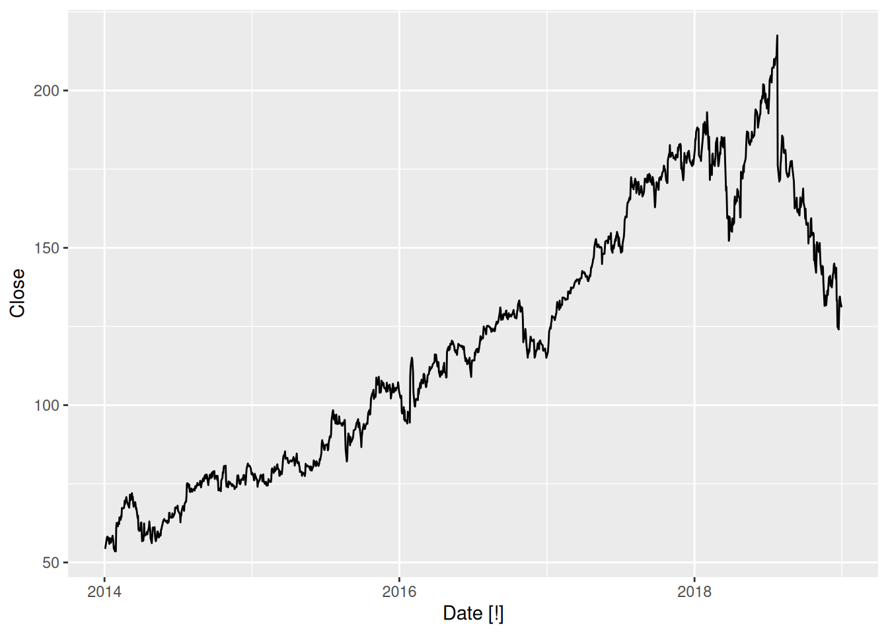
An upward trend is evident until mid-2018, after which the closing stock price drops.
- Produce forecasts using the drift method and plot them.
The data must be made regular before it can be modelled. We will use trading days as our regular index.
fb_stock <- fb_stock |>
mutate(trading_day = row_number()) |>
update_tsibble(index = trading_day, regular = TRUE)Time to model a random walk with drift.
fb_stock |>
model(RW(Close ~ drift())) |>
forecast(h = 100) |>
autoplot(fb_stock)
- Show that the forecasts are identical to extending the line drawn between the first and last observations.
Prove drift methods are extrapolations from the first and last observation. First, we will demonstrate it graphically.
fb_stock |>
model(RW(Close ~ drift())) |>
forecast(h = 100) |>
autoplot(fb_stock) +
geom_line(
aes(y = Close),
linetype = "dashed", colour = "blue",
data = fb_stock |> filter(trading_day %in% range(trading_day))
)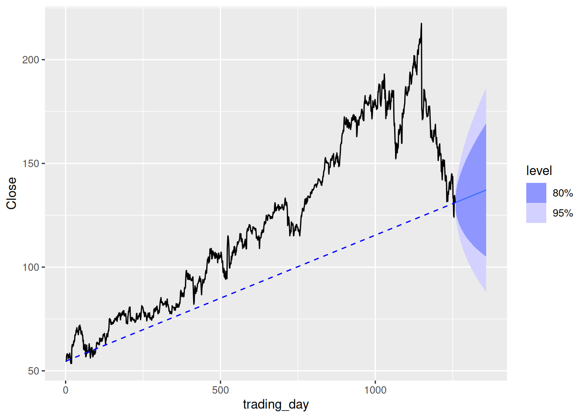
To prove it algebraically, note that \begin{align*} \hat{y}_{T+h|T} = y_T + h\left(\frac{y_T-y_1}{T-1}\right) \end{align*} which is a straight line with slope (y_T-y_1)/(T-1) that goes through the point (T,y_T).
Therefore, it must also go through the point (1,c) where (y_T-c)/(T-1) = (y_T - y_1) / (T-1), so c=y_1.
- Try using some of the other benchmark functions to forecast the same data set. Which do you think is best? Why?
Use other appropriate benchmark methods. The most appropriate benchmark method is the naive model. The mean forecast is terrible for this type of data, and the data is non-seasonal.
fb_stock |>
model(NAIVE(Close)) |>
forecast(h = 100) |>
autoplot(fb_stock)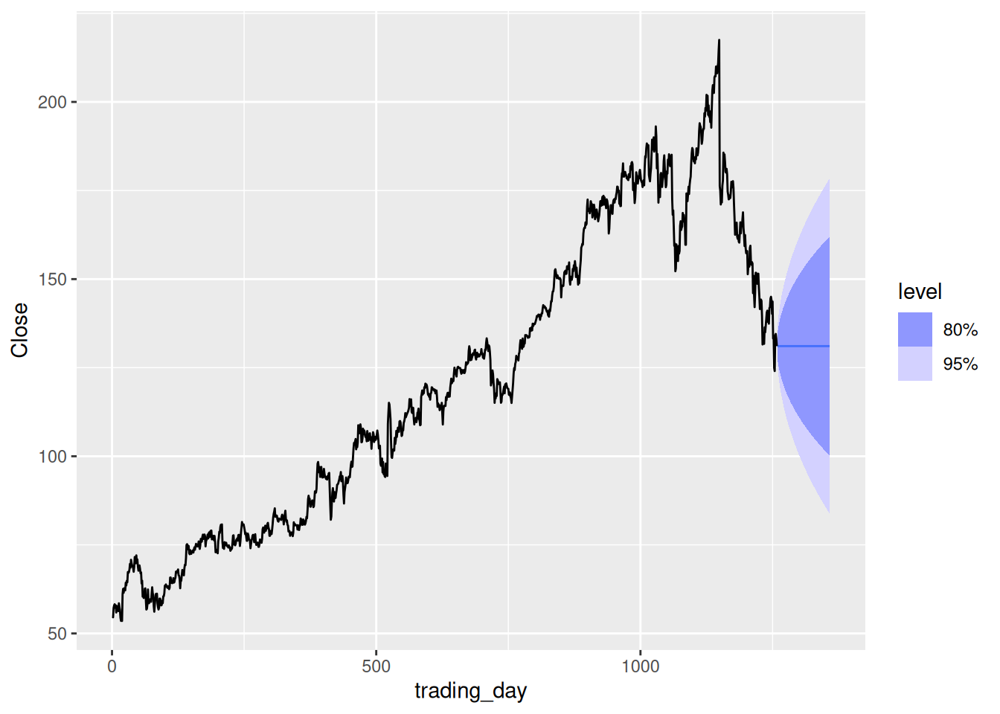
The naive method is most appropriate, and will also be best if the efficient market hypothesis holds true.
fpp3 5.10, Ex 3
Apply a seasonal naïve method to the quarterly Australian beer production data from 1992. Check if the residuals look like white noise, and plot the forecasts. The following code will help.
# Extract data of interest
recent_production <- aus_production |>
filter(year(Quarter) >= 1992)
# Define and estimate a model
fit <- recent_production |> model(SNAIVE(Beer))
# Look at the residuals
fit |> gg_tsresiduals()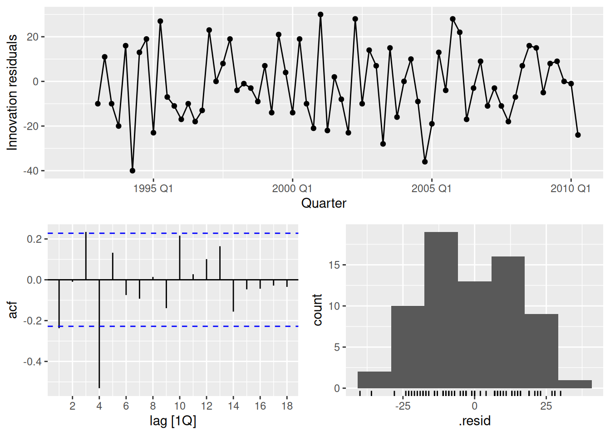
- The residuals are not centred around 0 (typically being slightly below it), this is due to the model failing to capture the negative trend in the data.
- Peaks and troughs in residuals spaced roughly 4 observations apart are apparent leading to a negative spike at lag 4 in the ACF. So they do not resemble white noise. Lags 1 and 3 are also significant, however they are very close to the threshold and are of little concern.
- The distribution of the residuals does not appear very normal, however it is probably close enough for the accuracy of our intervals (it being not centred on 0 is more concerning).
# Look at some forecasts
fit |>
forecast() |>
autoplot(recent_production)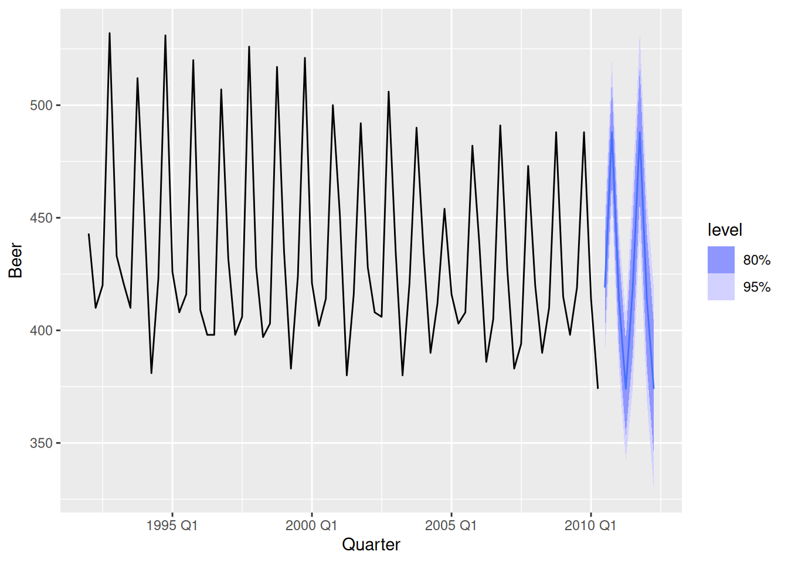
The forecasts look reasonable, although the intervals may be a bit wide. This is likely due to the slight trend not captured by the model (which subsequently violates the assumptions imposed on the residuals).
fpp3 5.10, Ex 4
Repeat the exercise for the Australian Exports series from
global_economyand the Bricks series fromaus_production. Use whichever ofNAIVE()orSNAIVE()is more appropriate in each case.
Australian exports
The data does not contain seasonality, so the naive model is more appropriate.
# Extract data of interest
aus_exports <- filter(global_economy, Country == "Australia")
# Define and estimate a model
fit <- aus_exports |> model(NAIVE(Exports))
# Check residuals
fit |> gg_tsresiduals()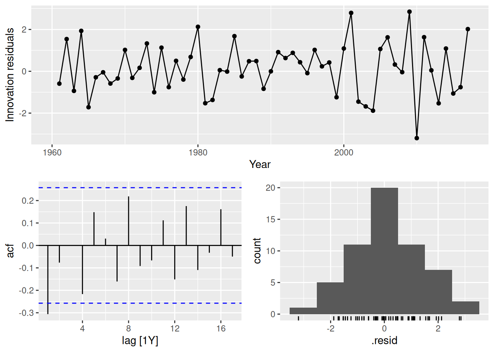
- The ACF plot reveals that the first lag exceeds the significance threshold.
- This data may still be white noise, as it is the only lag that exceeds the blue dashed lines (5% of the lines are expected to exceed it). However as it is the first lag, it is probable that there exists some real auto-correlation in the residuals that can be modelled.
- The distribution appears normal.
- The residual plot appears mostly random, however more observations appear to be above zero. This again, is due to the model not capturing the trend.
# Look at some forecasts
fit |>
forecast() |>
autoplot(aus_exports)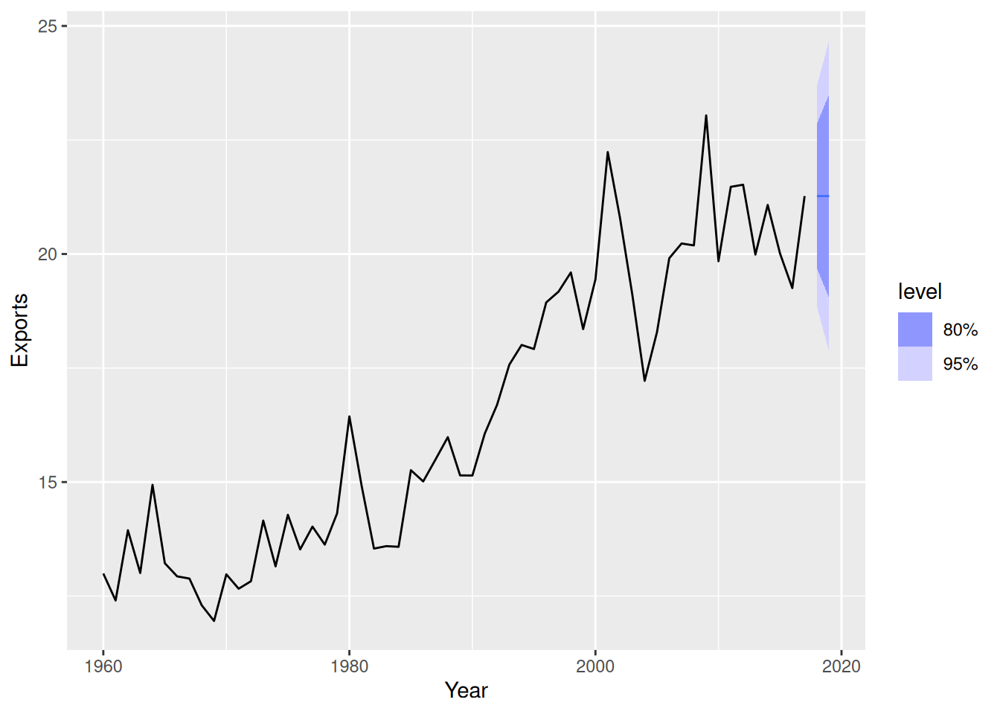
- The forecasts appear reasonable as the series appears to have flattened in recent years.
- The intervals are also reasonable — despite the assumptions behind them having been violated.
Australian brick production
The data is seasonal, so the seasonal naive model is more appropriate.
# Remove the missing values at the end of the series
tidy_bricks <- aus_production |>
filter(!is.na(Bricks))
# Define and estimate a model
fit <- tidy_bricks |>
model(SNAIVE(Bricks))
# Look at the residuals
fit |> gg_tsresiduals()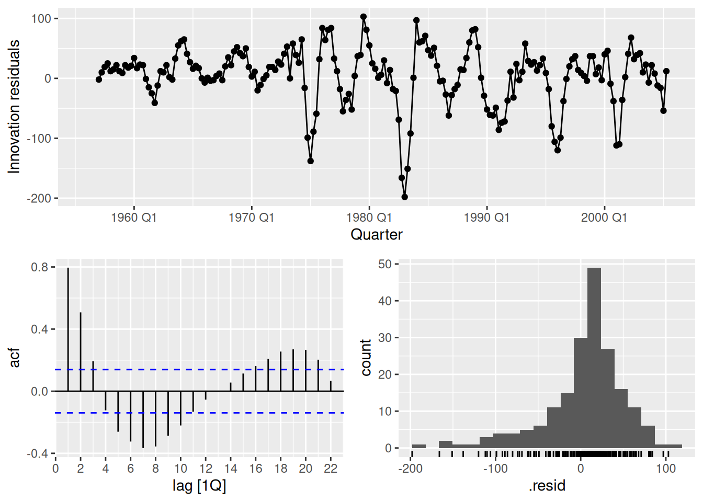
The residual plot does not appear random. Periods of low production and high production are evident, leading to autocorrelation in the residuals.
The residuals from this model are not white noise. The ACF plot shows a strong sinusoidal pattern of decay, indicating that the residuals are auto-correlated.
The histogram is also not normally distributed, as it has a long left tail.
# Look at some forecasts
fit |>
forecast() |>
autoplot(tidy_bricks)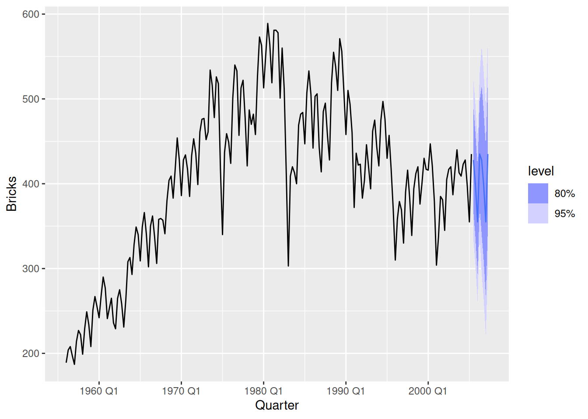
- The point forecasts appear reasonable as the series appears to have flattened in recent years.
- The intervals appear much larger than necessary.
fpp3 5.10, Ex 5
Produce forecasts for the 7 Victorian series in
aus_livestockusingSNAIVE(). Plot the resulting forecasts including the historical data. Is this a reasonable benchmark for these series?
aus_livestock |>
filter(State == "Victoria") |>
model(SNAIVE(Count)) |>
forecast(h = "5 years") |>
autoplot(aus_livestock)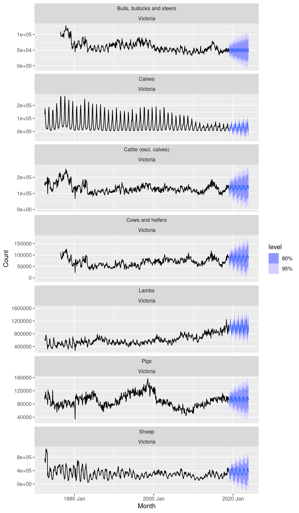
- Most point forecasts look reasonable from the seasonal naive method.
- Some series are more seasonal than others, and for the series with very weak seasonality it may be better to consider using a naive or drift method.
- The prediction intervals in some cases go below zero, so perhaps a log transformation would have been better for these series.
fpp3 5.10, Ex 11
We will use the bricks data from
aus_production(Australian quarterly clay brick production 1956–2005) for this exercise.
- Use an STL decomposition to calculate the trend-cycle and seasonal indices. (Experiment with having fixed or changing seasonality.)
tidy_bricks <- aus_production |>
filter(!is.na(Bricks))
tidy_bricks |>
model(STL(Bricks)) |>
components() |>
autoplot()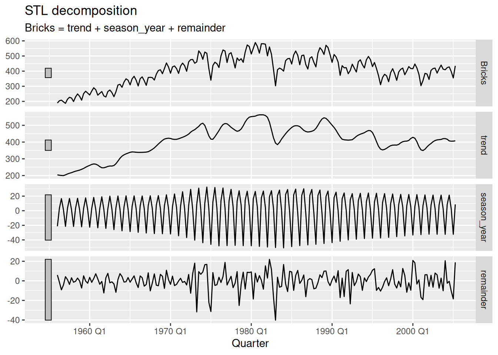
Data is multiplicative, and so a transformation should be used.
dcmp <- tidy_bricks |>
model(STL(log(Bricks))) |>
components()
dcmp |>
autoplot()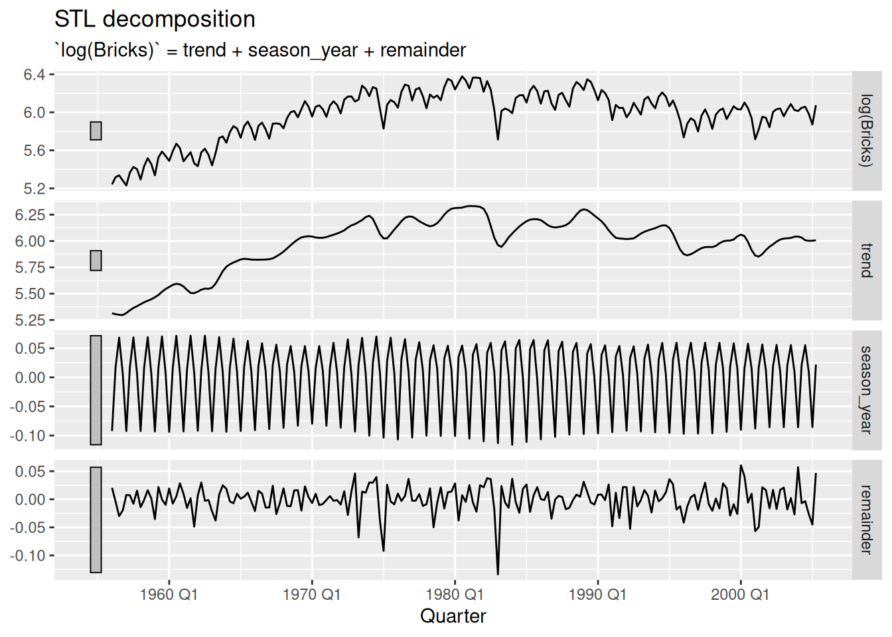
Seasonality varies slightly.
dcmp <- tidy_bricks |>
model(stl = STL(log(Bricks) ~ season(window = "periodic"))) |>
components()
dcmp |> autoplot()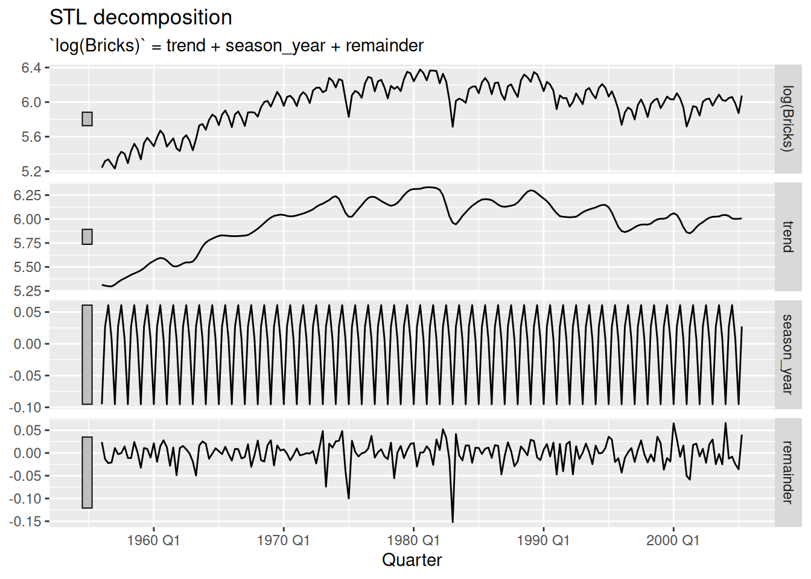
The seasonality looks fairly stable, so I’ve used a periodic season (window). The decomposition still performs well when the seasonal component is fixed. The remainder term does not appear to contain a substantial amount of seasonality.
- Compute and plot the seasonally adjusted data.
dcmp |>
as_tsibble() |>
autoplot(season_adjust)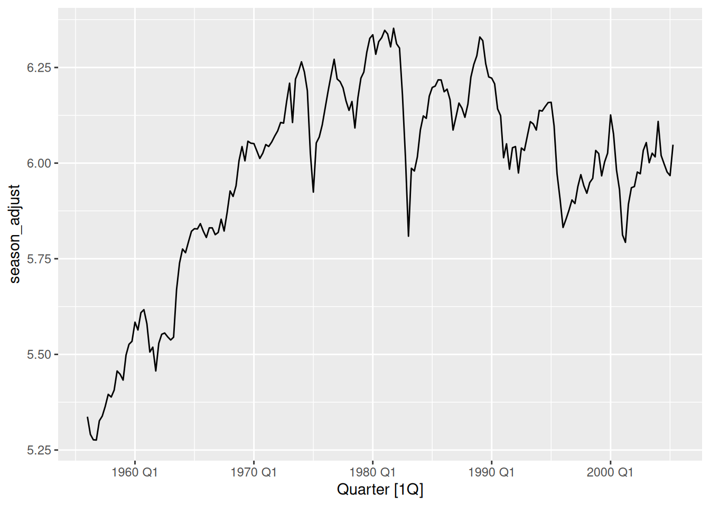
- Use a naïve method to produce forecasts of the seasonally adjusted data.
fit <- dcmp |>
select(-.model) |>
model(naive = NAIVE(season_adjust)) |>
forecast(h = "5 years")
dcmp |>
as_tsibble() |>
autoplot(season_adjust) + autolayer(fit)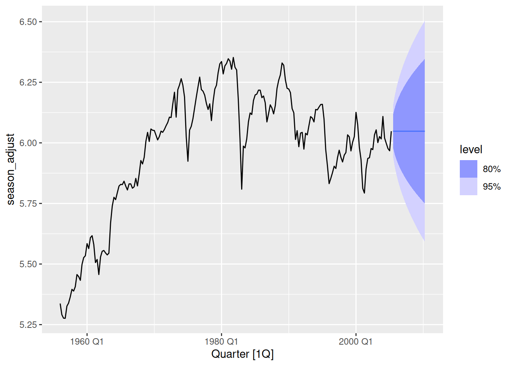
- Use
decomposition_model()to reseasonalise the results, giving forecasts for the original data.
fit <- tidy_bricks |>
model(stl_mdl = decomposition_model(STL(log(Bricks)), NAIVE(season_adjust)))
fit |>
forecast(h = "5 years") |>
autoplot(tidy_bricks)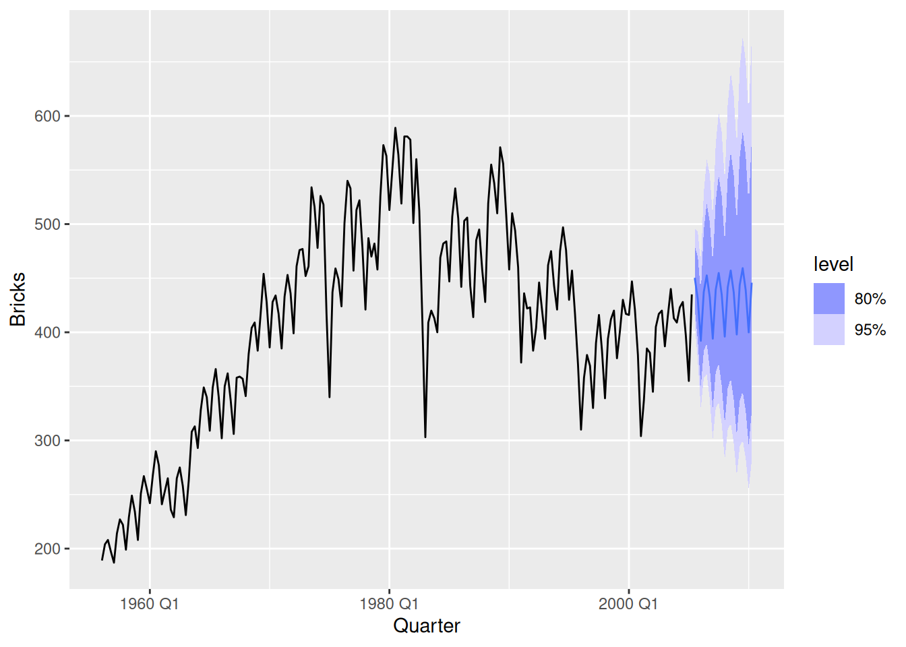
- Do the residuals look uncorrelated?
fit |> gg_tsresiduals()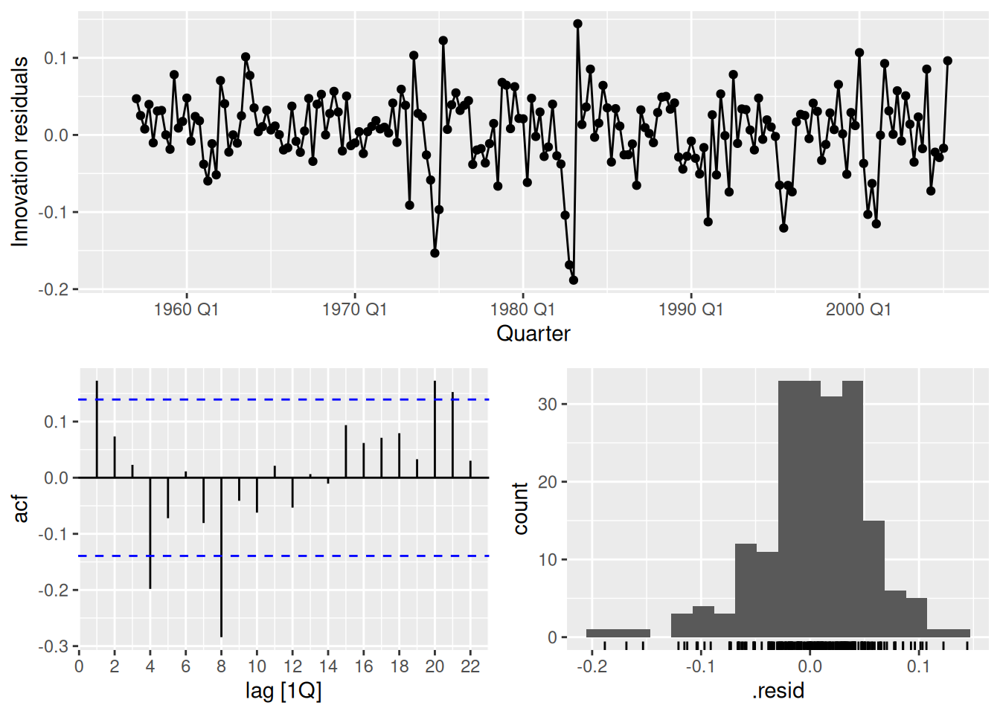
The residuals do not appear uncorrelated as there are several lags of the ACF which exceed the significance threshold.
- Repeat with a robust STL decomposition. Does it make much difference?
fit_robust <- tidy_bricks |>
model(stl_mdl = decomposition_model(STL(log(Bricks)), NAIVE(season_adjust)))
fit_robust |> gg_tsresiduals()The residuals appear slightly less auto-correlated, however there is still significant auto-correlation at lag 8.
- Compare forecasts from
decomposition_model()with those fromSNAIVE(), using a test set comprising the last 2 years of data. Which is better?
tidy_bricks_train <- tidy_bricks |>
slice(1:(n() - 8))
fit <- tidy_bricks_train |>
model(
stl_mdl = decomposition_model(STL(log(Bricks)), NAIVE(season_adjust)),
snaive = SNAIVE(Bricks)
)
fc <- fit |>
forecast(h = "2 years")
fc |>
autoplot(tidy_bricks, level = NULL)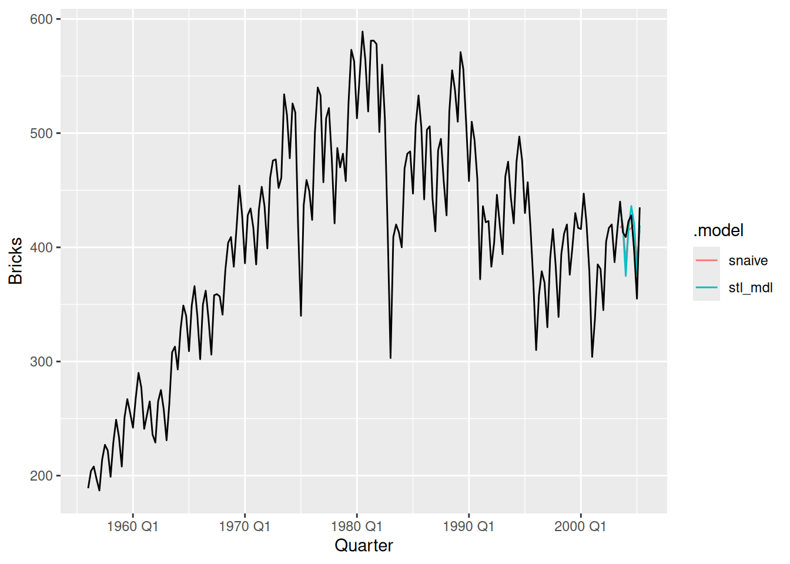
The decomposition forecasts appear to more closely follow the actual future data.
fc |>
accuracy(tidy_bricks)# A tibble: 2 × 10
.model .type ME RMSE MAE MPE MAPE MASE RMSSE ACF1
<chr> <chr> <dbl> <dbl> <dbl> <dbl> <dbl> <dbl> <dbl> <dbl>
1 snaive Test 2.75 20 18.2 0.395 4.52 0.504 0.407 -0.0503
2 stl_mdl Test 0.368 18.1 15.1 -0.0679 3.76 0.418 0.368 0.115 The STL decomposition forecasts are more accurate than the seasonal naive forecasts across all accuracy measures.
fpp3 7.10, Ex 2
Data set
olympic_runningcontains the winning times (in seconds) in each Olympic Games sprint, middle-distance and long-distance track events from 1896 to 2016.
- Plot the winning time against the year. Describe the main features of the plot.
olympic_running |>
ggplot(aes(x = Year, y = Time, colour = Sex)) +
geom_line() +
geom_point(size = 1) +
facet_wrap(~Length, scales = "free_y", nrow = 2) +
theme_minimal() +
scale_color_brewer(palette = "Dark2") +
theme(legend.position = "bottom", legend.title = element_blank()) +
labs(y = "Running time (seconds)")
The running times are generally decreasing as time progresses (although the rate of this decline is slowing down in recent olympics). There are some missing values in the data corresponding to the World Wars (in which the Olympic Games were not held).
- Fit a regression line to the data. Obviously the winning times have been decreasing, but at what average rate per year?
fit <- olympic_running |>
model(TSLM(Time ~ trend()))
tidy(fit)# A tibble: 28 × 8
Length Sex .model term estimate std.error statistic p.value
<int> <chr> <chr> <chr> <dbl> <dbl> <dbl> <dbl>
1 100 men TSLM(Time ~ trend()) (Int… 11.1 0.0909 123. 1.86e-37
2 100 men TSLM(Time ~ trend()) tren… -0.0504 0.00479 -10.5 7.24e-11
3 100 women TSLM(Time ~ trend()) (Int… 12.4 0.163 76.0 4.58e-25
4 100 women TSLM(Time ~ trend()) tren… -0.0567 0.00749 -7.58 3.72e- 7
5 200 men TSLM(Time ~ trend()) (Int… 22.3 0.140 159. 4.06e-39
6 200 men TSLM(Time ~ trend()) tren… -0.0995 0.00725 -13.7 3.80e-13
7 200 women TSLM(Time ~ trend()) (Int… 25.5 0.525 48.6 8.34e-19
8 200 women TSLM(Time ~ trend()) tren… -0.135 0.0227 -5.92 2.17e- 5
9 400 men TSLM(Time ~ trend()) (Int… 50.3 0.445 113. 1.53e-36
10 400 men TSLM(Time ~ trend()) tren… -0.258 0.0235 -11.0 2.75e-11
# ℹ 18 more rowsThe men’s 100 running time has been decreasing by an average of 0.013 seconds each year.
The women’s 100 running time has been decreasing by an average of 0.014 seconds each year.
The men’s 200 running time has been decreasing by an average of 0.025 seconds each year.
The women’s 200 running time has been decreasing by an average of 0.034 seconds each year.
The men’s 400 running time has been decreasing by an average of 0.065 seconds each year.
The women’s 400 running time has been decreasing by an average of 0.04 seconds each year.
The men’s 800 running time has been decreasing by an average of 0.152 seconds each year.
The women’s 800 running time has been decreasing by an average of 0.198 seconds each year.
The men’s 1500 running time has been decreasing by an average of 0.315 seconds each year.
The women’s 1500 running time has been increasing by an average of 0.147 seconds each year.
The men’s 5000 running time has been decreasing by an average of 1.03 seconds each year.
The women’s 5000 running time has been decreasing by an average of 0.303 seconds each year.
The men’s 10000 running time has been decreasing by an average of 2.666 seconds each year.
The women’s 10000 running time has been decreasing by an average of 3.496 seconds each year.
- Plot the residuals against the year. What does this indicate about the suitability of the fitted line?
augment(fit) |>
ggplot(aes(x = Year, y = .innov, colour = Sex)) +
geom_line() +
geom_point(size = 1) +
facet_wrap(~Length, scales = "free_y", nrow = 2) +
theme_minimal() +
scale_color_brewer(palette = "Dark2") +
theme(legend.position = "bottom", legend.title = element_blank())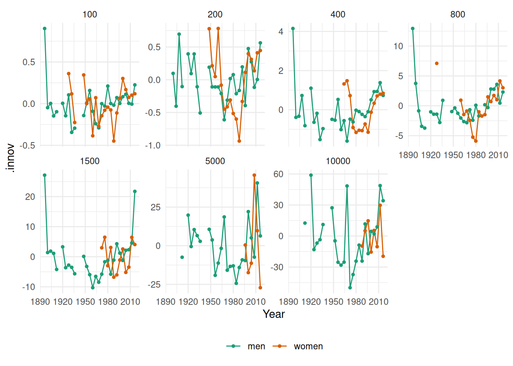
It doesn’t seem that the linear trend is appropriate for this data.
- Predict the winning time for each race in the 2020 Olympics. Give a prediction interval for your forecasts. What assumptions have you made in these calculations?
fit |>
forecast(h = 1) |>
mutate(PI = hilo(Time, 95)) |>
select(-.model)# A fable: 14 x 6 [4Y]
# Key: Length, Sex [14]
Length Sex Year
<int> <chr> <dbl>
1 100 men 2020
2 100 women 2020
3 200 men 2020
4 200 women 2020
5 400 men 2020
6 400 women 2020
7 800 men 2020
8 800 women 2020
9 1500 men 2020
10 1500 women 2020
11 5000 men 2020
12 5000 women 2020
13 10000 men 2020
14 10000 women 2020
# ℹ 3 more variables: Time <dist>, .mean <dbl>, PI <hilo>Using a linear trend we assume that winning times will decrease in a linear fashion which is unrealistic for running times. As we saw from the residual plots above there are mainly large positive residuals for the last few years, indicating that the decreases in the winning times are not linear. We also assume that the residuals are normally distributed.
fpp3 7.10, Ex 6
The annual population of Afghanistan is available in the
global_economydata set.
- Plot the data and comment on its features. Can you observe the effect of the Soviet-Afghan war?
global_economy |>
filter(Country == "Afghanistan") |>
autoplot(Population / 1e6) +
labs(y = "Population (millions)") +
geom_ribbon(aes(xmin = 1979.98, xmax = 1989.13), fill = "pink", alpha = 0.4) +
annotate("text", x = 1984.5, y = 10, label = "Soviet-Afghan war", col = "red", size = 3)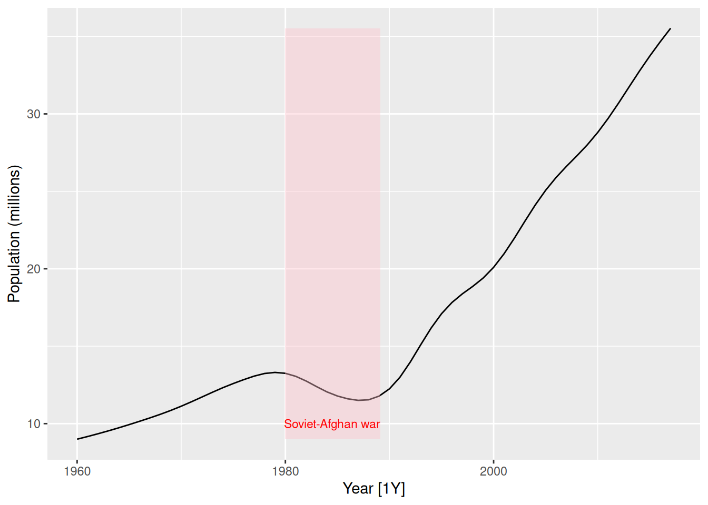
The population increases slowly from 1960 to 1980, then decreases during the Soviet-Afghan war (24 Dec 1979 – 15 Feb 1989), and has increased relatively rapidly since then. The last 30 years has shown an almost linear increase in population.
- Fit a linear trend model and compare this to a piecewise linear trend model with knots at 1980 and 1989.
fit <- global_economy |>
filter(Country == "Afghanistan") |>
model(
linear = TSLM(Population ~ trend()),
piecewise = TSLM(Population ~ trend(knots = c(1980, 1989)))
)
augment(fit) |>
autoplot(.fitted) +
geom_line(aes(y = Population), colour = "black")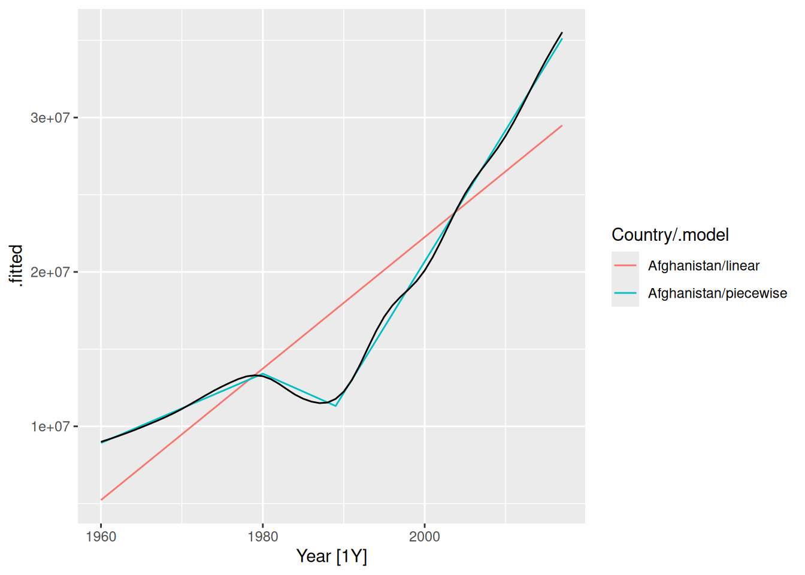
The fitted values show that the piecewise linear model has tracked the data very closely, while the linear model is inaccurate.
- Generate forecasts from these two models for the five years after the end of the data, and comment on the results.
fc <- fit |> forecast(h = "5 years")
autoplot(fc) +
autolayer(filter(global_economy |> filter(Country == "Afghanistan")), Population)
The linear model is clearly incorrect with prediction intervals too wide, and the point forecasts too low.
The piecewise linear model looks good, but the prediction intervals are probably too narrow. This model assumes that the trend since the last knot will continue unchanged, which is unrealistic.